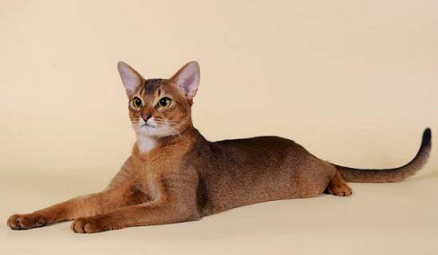

Это порода кошек одна из самых древних. Эфиопский зверь (так еще называют красавицу) – кошка редкого ума и редкой же строптивости. Порода славится исключительными окрасами – дикий окрас, красный (соррель или цинамон), голубой и фавн характерны для абиссинки. Идеально, если каждый волосок ее шерсти имеет тройной тикинг. Фото потомков кота Зула, первого абиссинца, привезенного в Европу, не передают всего дикого очарования представителей этой породы.